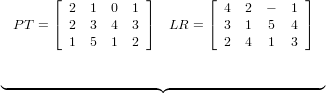
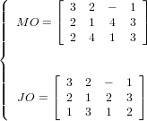
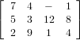

There are some basic algorithms belonging to the block-matrices model, which have a linear
complexity due to the special structure of the sequence graph. They exclusively use the matrices of
the model which describe in one-to-one correspondence the graph-theoretic properties
considered.
Algorithm 1 determines the sequence LR by means of the given matrices MO and JO, if graph G(MO,JO) does not contain cycles. The set MQ contains all operations, which are both a source in G(MO) as well as in G(JO).
| Input: n,m,SIJ, MO and JO on the set of operations SIJ; |
| Output: LR on the set of operations SIJ, if G(MO,JO) is acyclic; |
| BEGIN k := 0; |
| REPEAT |
| k := k + 1; Determine set MQ = {(ij) ∈ SIJ∣moij = joij = 1}; |
| IF MQ = ∅ THEN (MO,JO) is infeasible and STOP; |
| FORALL(ij) ∈ MQ DO |
| BEGIN |
| lrij = k; Mark in MO row i and in JO column j; |
| END; |
| SIJ := SIJ \ MQ; |
| FORALL (ij) ∈ SIJ in a marked row in MO DO moij := moij − 1; |
| FORALL (ij) ∈ SIJ in a marked column in JO DO joij := joij − 1; |
| UNTIL SIJ = ∅; |
| END. |
Algorithm 2 determines MO and JO by means of LR. Here ai and bj are the smallest natural numbers which are available for the rank of operation (ij). The maximal element in LR is denoted by r.
| Input: n,m,r,I,J,SIJ, LR on the set of operations SIJ; |
| Output: MO and JO on the set of operations SIJ; |
| BEGIN Set ∀ i ∈ I: ai = 1 and ∀ j ∈ J: bj = 1; |
| FOR k := 1 TO r DO |
| FORALL (ij) ∈ SIJ with lrij = k DO |
| BEGIN |
| Set moij = ai and ai = ai + 1; |
| Set joij = bi and bj = bj + 1; |
| END; |
| END. |
Algorithm 3 generates a semi-active schedule, i.e., the matrix C = [cij] of the completion times of all operations, by means of the matrix of the processing times PT and the sequence LR. Here ri and rj denote the earliest possible starting time of job Ai and on machine Mj, respectively.
| Input: n,m,r,I,J,SIJ, PT and LR on the set of operations SIJ; |
| Output: C on the set of operations SIJ. |
| BEGIN |
| Set ∀ i ∈ I: ri = 0 and ∀ j ∈ J: rj = 0; |
| FOR k := 1 TO r DO |
| FORALL (ij) ∈ SIJ with lrij = k DO |
| BEGIN |
| cij := max{ri,rj} + pij; |
| ri := cij; rj := cij; |
| END; |
| END. |
Algorithm 4 determines the matrices H = [hij] and T = [tij]. hij is the head of operation (ij), i.e., the smallest time which is necessary for the processing of all preceding operations of (ij) in the sequence graph G(MO,JO). tij denotes the tail of operation (ij), i.e., the smallest time which is necessary for the processing of all succeeding operations of (ij) in the sequence graph G(MO,JO). Here ri,rj are again the earliest starting times of job Ai and on machine Mj, respectively. si,sj denote the earliest starting times of jobs Ai and on machine Mj, respectively, in a backward calculation.
| Input: n,m,r,I,J,SIJ, PT and LR on the set of operations SIJ; |
| Output: H and T on the set of operations SIJ. |
| BEGIN |
| Set ∀ i ∈ I: ri = 0 and ∀ j ∈ J: rj = 0; |
| Set ∀ i ∈ I: si = 0 and ∀ j ∈ J: sj = 0; |
| FOR k := 1 TO r DO |
| BEGIN |
| FORALL (ij) ∈ SIJ with lrij = k DO |
| BEGIN |
| hij := max{ri,rj}; ri := hij + pij; rj := hij + pij; |
| END; |
| FORALL (ij) ∈ SIJ with lrij = r − k + 1 DO |
| BEGIN |
| tij := max{si,sj}; si := tij + pij; sj := tij + pij; |
| END; |
| END; |
| END. |
Matrix W = H + PT + T contains the weight of a critical path wij from a source via operation (ij) to a sink of a sequence graph G(MO,JO). Thus, all operations with a maximal weight wij belong to at least one critical path. Due to the properties of a latin rectangle, we can order all operations in O(nm) time according to non-decreasing ranks. Thus, we can determine the heads and tails as well as all wij in linear time.
This chapter finishes with an example on the block-matrices model.
Example 3 Consider the matrix PT of the processing times from Example 1. The due dates of the jobs are given by d1 = 6,d2 = 12,d3 = 8. The following combination of machine and job orders is feasible since the graph G(MO,JO) is a sequence graph, i.e., G(MO,JO) does not contain any cycle.
A1 : | M4 → M2 → M1 |
A2 : | M2 → M1 → M4 → M3 |
A3 : | M3 → M1 → M4 → M2 |
M1 : | A3 → A2 → A1 |
M2 : | A2 → A1 → A3 |
M3 : | A3 → A2 |
M4 : | A1 → A3 → A2 |
Algorithm 1 determines the sequence LR, and Algorithm 3 determines the schedule
C:
|  | ⇐⇒ |  |
| C =  | ||
Matrices H and T are determined by Algorithm 4, which gives matrix W = H + PT + T:
Schedule C yields Cmax = 12 and C1 = 7, C2 = 12, C3 = 9 such that ∑ Ci = 28, Lmax = 1, ∑ Ti = 2 and ∑ Ui = 1 follows. This schedule is optimal in the open-shop case for the objective functions Cmax and Lmax, but there are better schedules for ∑ Ci, ∑ Ti and ∑ Ui.
In a job-shop and a flow-shop problem, respectively, with given matrix MO, all sequences LR are feasible which contain the given machine order.